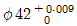
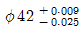
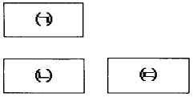
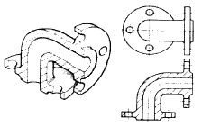
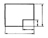
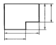
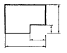
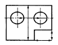
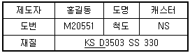

압연기능사 (2016-01-24 기출문제)
1과목: 금속재료일반
1. Mg 및 Mg 합금의 성질에 대한 설명으로 옳은 것은?
- Mg의 열전도율은 Cu와 Al보다 높다.
- Mg의 전기전도율은 Cu와 Al보다 높다.
- Mg합금보다 Al합금의 비강도가 우수하다.
- Mg는 알칼리에 잘 견디나, 산이나 염수에는 침식된다.
(정답률: 80%)

2. Al의 비중과 용융점(℃)은 약 얼마인가?
- 2.7, 660℃
- 4.5, 390℃
- 8.9, 220℃
- 10.5, 450℃
(정답률: 89%)
3. 강에 S, Pb 등의 특수 원소를 첨가하여 절삭할 때 칩을 잘게 하고 피삭성을 좋게 만든 강은 무엇인가?
- 불변강
- 쾌삭강
- 베어링강
- 스프링강
(정답률: 89%)
4. 철에 Al, Ni, Co를 첨가한 합금으로 잔류 자속 밀도가 크고 보자력이 우수한 자성 재료는?
- 퍼멀로이
- 센더스트
- 알니코 자석
- 페라이트 자석
(정답률: 75%)
5. 물과 얼음, 수증기가 평형을 이루는 3 중점 상태에서의 자유도는?
- 0
- 1
- 2
- 3
(정답률: 79%)
6. 탄소강은 200~300℃에서 연신율과 단면수축률이 상온보다 저하되어 단단하고 깨지기 쉬우며, 강의 표면이 산화되는 현상은?
- 적열메짐
- 상온메짐
- 청열메짐
- 저온메짐
(정답률: 72%)
7. 니켈-크롬 합금 중 사용한도가 1000℃까지 측정할 수 있는 합금은?
- 망가닌
- 우드메탈
- 배빗메탈
- 크로멜-알루멜
(정답률: 76%)
8. 주철에 대한 설명으로 틀린 것은?
- 인장강도에 비해 압축강도가 높다.
- 회주철은 편상 흑연이 있어 감쇠능이 좋다.
- 주철 잘삭 시에는 절삭유를 사용하지 않는다.
- 액상일 때 유동성이 나쁘며, 충격 저항이 크다.
(정답률: 61%)
9. 금속재료의 표면에 강이나 주철의 작은 입자(ø0.5mm~1.0mm)를 고속으로 분사시켜, 표면의 경도를 높이는 방법은?
- 침탄법
- 질화법
- 폴리싱
- 쇼트피닝
(정답률: 76%)
10. 황동의 종류 중 순 Cu와 같이 연하고 코이닝 하기 쉬우므로 동전이나 메달 등에 사용되는 합금은?
- 95%Cu – 5%Zn 합금
- 70%Cu – 30%Zn 합금
- 60%Cu – 40%Zn 합금
- 50%Cu – 50%Zn 합금
(정답률: 72%)
11. 주위의 온도 변화에 따라 선팽창 계수나 탄성률 등의 특정한 성질이 변하지 않는 불변강이 아닌 것은?
- 인바
- 엘린바
- 코엘린바
- 스텔라이트
(정답률: 70%)
12. 금속간 화합물의 특징을 설명한 것 중 옳은 것은?
- 어느 성분 금속보다 용융점이 낮다.
- 어느 성분 금속보다 경도가 낮다.
- 일반 화합물에 비하여 결합력이 약하다.
- Fe3C는 금속간 화합물에 해당되지 않는다.
(정답률: 72%)
13. 구멍

, 축
일 때 최대 죔새는?- 0.009
- 0.018
- 0.025
- 0.034
(정답률: 69%)
14. 그림은 3각법에 의한 도면 배치를 나타낸 것이다. ㈀, ㈁, ㈂에 해당하는 도면의 명칭을 옳게 짝지은 것은?

- ㈀ : 정면도, ㈁ : 좌측면도, ㈂ : 평면도
- ㈀ : 정면도, ㈁ : 평면도, ㈂ : 좌측면도
- ㈀ : 평면도, ㈁ : 정면도, ㈂ : 우측면도
- ㈀ : 평면도, ㈁ : 우측면도, ㈂ : 정면도
(정답률: 91%)
15. 그림과 같은 단면도는?

- 전단면도
- 한쪽 단면도
- 부분 단면도
- 회전 단면도
(정답률: 63%)
2과목: 금속제도
16. 치수 기입을 위한 치수선과 치수보조선 위치가 가장 적합한 것은?




(정답률: 76%)
17. 제도 도면에 사용되는 문자의 호칭 크기는 무엇으로 나타내는가?
- 문자의 폭
- 문자의 굵기
- 문자의 높이
- 문자의 경사도
(정답률: 76%)
18. 금속의 가공 공정의 기호 중 스크레이핑 다듬질에 해당하는 약호는?
- FB
- FF
- FL
- FS
(정답률: 76%)
19. 표제란에 재료를 나타내는 표시 중 밑줄 친 KS D 가 의미하는 것은?

- KS 규격에서 기본 사항
- KS 규격에서 기계 부분
- KS 규격에서 금속 부분
- KS 규격에서 전기 부분
(정답률: 89%)
20. 미터나사의 표시가 “M 30 × 2”로 되어 있을 때 2가 의미하는 것은?
- 등급
- 리드
- 피치
- 거칠기
(정답률: 84%)
21. 한국산업표준에서 규정한 탄소 공구강의 기호로 옳은 것은?
- SCM
- STC
- SKH
- SPS
(정답률: 87%)
22. 침탄, 질화 등 특수 가공 할 부분을 표시할 때 나타내는 선으로 옳은 것은?
- 가는 파선
- 가는 일점 쇄선
- 가는 이점 쇄선
- 굵은 일점 쇄선
(정답률: 65%)
23. 물체를 투상면에 대하여 한쪽으로 경사지게 투상하여 입체적으로 나타내는 것으로 물체를 입체적으로 나타내기 위해 수평선에 대하여 30°, 45°, 60° 경사각을 주어 삼각자를 편리하게 사용하게 한 것은?
- 투시도
- 사투상도
- 등각 투상도
- 부등각 투상도
(정답률: 76%)
24. 다음 기호 중 치수 보조 기호가 아닌 것은?
- C
- R
- t
- △
(정답률: 87%)
25. 가로 140mm, 세로 140mm 인 압연재를 압연하여 가로 120mm, 세로 120mm, 길이 4m 인 강편을 만들었다면 원래 강편의 길이는 약 몇 m 인가?
- 1.17
- 2.94
- 4.01
- 6.11
(정답률: 69%)
26. 압연기에서 AGC 장치에 대한 설명으로 옳은 것은?
- 롤의 Crown 측정 장치이다.
- 압연 윤활 공급 자동 장치이다.
- 압연 속도의 자동제어 장치이다.
- 판두께 변동의 자동 제어 장치이다.
(정답률: 74%)
27. 형강 등을 제조할 때 사용하는 조강용 강편은?
- 후판, 시트바
- 시트바, 슬래브
- 블룸, 빌릿
- 슬래브, 박판
(정답률: 81%)
28. 가열 속도가 너무 빠를 경우 재료 내·외부에 온도차로 인해 응력변화에 의한 균열의 명칭은?
- 클링킹(Clinking)
- 엣지 크랙(Edge crack)
- 스키드 마크(Skid mark)
- 코일 브레이크(Coil break)
(정답률: 61%)
29. 압연기의 롤의 속도가 2m/sec, 출측 강재 속도가 3m/sec 인 경우 선진율은 약 몇 % 인가?
- 0.5%
- 33%
- 45%
- 50%
(정답률: 54%)
30. 압연 방법 중 압연속도에 대한 설명으로 틀린 것은?
- 고온에서의 압연은 변형 저항이 작은 재료일수록 압연하기 쉽다.
- 압연 후의 두께와 압연 전의 두께의 비가 클수록 압연하게 쉽다.
- 열간압연 속도는 롤의 감속비 및 압연기의 형식에 따라 다르게 나타난다.
- 열간압연한 스트립은 산세, 수세 후에 냉간 압연에서 치수를 조절하는 경우가 일반적으로 많다.
(정답률: 69%)
3과목: 압연기술
31. 다음 중 사상압연의 목적을 설명한 것으로 틀린 것은?
- 규정된 제품의 치수로 압연하기 위하여
- 표면결함이 없는 제품을 생산하기 위하여
- 규정된 사상온도로 압연하여 재질 특성을 만족시키기 위하여
- 양파, 중파의 형상은 없고, Camber가 있는 형상을 만들기 위하여
(정답률: 84%)
32. 열간압연의 온도로 옳은 것은?
- 재결정온도 이상
- 재결정온도 이하
- A2 변태점온도 이상
- A2 변태점온도 이하
(정답률: 85%)
33. 압연용 소재 중 판재가 아닌 것은?
- 블룸(Bloom)
- 시이트(Sheet)
- 스트립(Strip)
- 플레이트(Plate)
(정답률: 59%)
34. 선재 압연에 따른 공형 설계의 목적이 아닌 것은?
- 간접 압하율 증대
- 표면 결함의 발생 방지
- 롤의 국부적 마모 방지
- 정확한 치수의 제품 생산
(정답률: 71%)
35. 냉간압연시 도금 제품의 결함 중 도금 자국과 도유 부족이 있다. 도유 부족 결함의 발생원인에 해당되는 것은?
- 노내 장력 조정 불량 할 때
- 하부 롤의 연삭이 불량 할 때
- 포트(pot) 내에서의 판이 심하게 움직일 때
- 오일 스프레이노즐이 막혀 분사 상태가 불균일 할 때
(정답률: 77%)
36. 냉연강판의 전해청정시 세정액을 사용되지 않는 것은?
- 탄산나트륨
- 인산나트륨
- 수산화나트륨
- 올슈규산나트륨
(정답률: 75%)
37. 입구측의 속도를 V0, 중립점의 속도를 V1, 출구측의 속도를 V2라 하였다면 이들의 관계 중 옳은 것은?
- V0 ＞ V1 ＞ V2
- V0 ＜ V2 ＜ V1
- V0 = V1 = V2
- V0 ＜ V1 ＜ V2
(정답률: 78%)
38. 지방산과 글리세린이 주성분인 게이지용의 압연유로 널리 사용되는 것은?
- 광유(Mineral oil)
- 유지(Fat and oil)
- 올레핀유(Olefin oil)
- 그리스유(Grease oil)
(정답률: 81%)
39. 강제 순환 급유 방법은 어느 급유법을 쓰는 것이 가장 좋은가?
- 중력 급유에 의한 방법
- 패드 급유에 의한 방법
- 펌프 급유에 의한 방법
- 원심 급유에 의한 방법
(정답률: 76%)
40. 냉간압연 후 풀림(annealing)의 주목적은?
- 경도를 증가시키기 위해서
- 가공하기에 필요한 온도로 올리기 위해서
- 냉간압연 후의 표면을 미려하게 하기 위해서
- 냉간압연에서 발생한 응력변형을 제거하기 위해서
(정답률: 70%)
41. 가열로 버너에 사용되는 연료가 아닌 것은?
- COG
- LDG
- BDG
- BFG
(정답률: 69%)
42. 압연유가 갖추어야 할 필수 조건이 아닌 것은?
- 방청성
- 노화성
- 냉각성
- 윤활성
(정답률: 81%)
43. 소성 가공에 대한 설명으로 옳은 것은?
- 재료를 고체 상태에서 서로 덧붙여서 소요형상을 만드는 방법이다.
- 재료를 고체 상태에서 재료의 피삭성을 이용하여 소요형상을 만드는 방법이다.
- 재료를 용융시켜 소요형상을 응고시켜 만드는 방법이다.
- 힘을 제거하여도 원형으로 완전히 복귀되지 않는 성질을 이용하여 재료를 가공하는 방법이다.
(정답률: 76%)
44. 냉연 박판의 제조공정 순서로 옳은 것은?
- 핫(hot)코일 → 냉간압연 → 풀림 → 표면청정 → 산세 → 조질압연 → 전단리코일
- 핫(hot)코일 → 산세 → 냉간압연 → 표면청정 → 풀림 → 조질압연 → 전단리코일
- 냉간압연 → 산세 → 핫(hot)코일 → 표면청정 → 풀림 → 전단리코일 → 조질압연
- 냉간압연 → 산세 → 표면청정 → 핫(hot)코일 → 풀림 → 조질압연 → 전단리코일
(정답률: 83%)
45. 냉간압연된 스트립의 표면에 부착한 오염을 세정하는 방법으로서 화학적인 방법이 아닌 것은?
- 용제세정
- 유화세정
- 전해세정
- 계면활성제세정
(정답률: 72%)
4과목: 압연설비
46. 압연가공시 롤의 속도와 스트립의 속도가 일치되는 지점은?
- 선진점
- 후진점
- 중립점
- 접촉점
(정답률: 86%)
47. 냉간압연 소재인 열연강판 표면에 생성되는 고온 스케일(scale)의 종류가 아닌 것은?
- Wistite(FeO)
- Martensite(Fe3C)
- Hematite(Fe2O3)
- Magnetite(Fe3O4)
(정답률: 74%)
48. 공형의 홈에 재료가 꽉차지 않았을 때의 상태로 데드 홀부에 나타나는 것은?
- 언더 필링(Under filling)
- 오버 필링(Over filling)
- 로우 필링(Low filling)
- 어퍼 필링(Upper filling)
(정답률: 78%)
49. 다음 중 디스케이링(descaling)의 주역할은?
- 스트립의 온도 조정을 해준다.
- 압연온도 및 권취온도 제어를 원활하게 한다.
- 스케일 발생을 억제하고 통판성을 좋게 한다.
- 스케일을 제거해 스트립(strip)의 표면을 깨끗하게 한다.
(정답률: 83%)
50. 교정기의 사용이 필요하지 않은 압연 제품은?
- 선재
- 레일
- 환봉
- H형강
(정답률: 57%)
51. 전단 설비에서 제품으로 된 합격품을 받는 장치는?
- 레벨러
- 크롭시어
- 사이드트리머
- 프라임 파일러
(정답률: 60%)
52. 압연하중이 300kg, 토크 암 길이가 8mm 일 때 압연 토크는 얼마인가?
- 2.4 kg·m
- 37.5 kg·m
- 240 kg·m
- 375 kg·m
(정답률: 58%)
53. 롤에 구동력이 전달되는 부분의 명칭은?
- 롤 몸(roll body)
- 롤 목(roll neck)
- 이음부(wobbler)
- 베어링(bearing)
(정답률: 70%)
54. 강판의 절단을 위한 구성설비가 아닌 것은?
- 슬리터(Slitter)
- 벨트 래퍼(Belt wrapper)
- 시트 전단기(Sheet Shear)
- 사이드 트리머(Side Trimmer)
(정답률: 66%)
55. 감전 재해 예방 대책을 설명한 것 중 틀린 것은?
- 전기 설비 점검을 철저히 한다.
- 이동전선은 지면에 배선한다.
- 설비의 필요한 부분은 보호 접지를 실시한다.
- 충전부가 노출된 부분에는 절연 방호구를 사용한다.
(정답률: 90%)
56. 강괴 균열로 조업에서 T.T(Trank time)란 무엇을 의미하는가?
- 균열로에 강괴를 장입하여 균열 후 추출시까지
- 제강조괴장에서 형발시부터 균열로에 장입완료시까지
- 제강조괴장에서 주입완료 후 균열로에 장입완료시까지
- 균열로에 강괴를 장입하여 균열작업이 끝날 때까지
(정답률: 69%)
57. 다음 냉각 압연의 보조 설비 중 코블 가드(Coble Guard)의 역할 및 기능에 대한 설명으로 옳은 것은?
- 냉간 압연시 스트립(strip)의 통판성을 향상시키기 위하여 스트립의 양측에 설치되어 쏠림을 방지하는 설비이다.
- 냉간 압연시 스트립(strip)을 코일화하는 권취작업을 위하여 스트립을 맨드릴에 안내하여 스트립의 톱(Top)부를 안내하는 설비이다.
- 냉간 압연시 스트립(strip)의 머리 부분을 통판시킬 때 머리부분에 상향일 발생하여 타 설비와 간섭되는 사고를 방지하기 위하여 상작업 롤에 근접 설치되어 있는 설비이다.
- 냉간 압연시 스트립(strip)의 통판성을 향상시키기위하여 스트립의 하측에 설치되어 톱(Top)부의 하향을 방지하는 설비이다.
(정답률: 75%)
58. 하인리히의 사고 발생 단계 중 직접원인에 해당되는 것은?
- 개인적 결함
- 전문지식의 결여
- 사회적 환경과 유전적 요소
- 불안전 해동 및 불안전 상태
(정답률: 72%)
59. 규정된 제품의 치수로 압연하여 재질의 특성에 맞는 형상으로 마무리하는 압연 설비는?
- 조압연
- 대강 압연기
- 분괴 압연기
- 사상 압연기
(정답률: 73%)
60. 냉간압연의 목적과 관련이 가장 적은 것은?
- 판 두께 정도(精度)가 높다.
- 열연 제품에 비해 동력이 적게 든다.
- 열연 제품보다 더욱 얇은 강판을 제조할 수 있다.
- 스케일 부착이 없으며 표면 결함이 적고 미려하다.
(정답률: 71%)